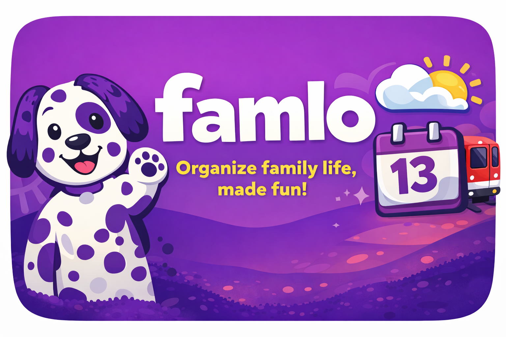

Tärkein ensin
Ei enää hyppimistä sovelluksesta toiseen vain nähdäksesi, mitä tänään tapahtuu, millainen sää on ja miten kaikki pääsevät perille.
Kun kalenteri, sää, liikkuminen ja pienet päätökset ovat eri paikoissa, arjesta tulee helposti turhan sekavaa. Famlo kokoaa tärkeimmät asiat yhteen ystävälliseen näkymään, jonka ymmärtää nopeasti.




Famlo on suunniteltu isoille näytöille, nopeille vilkaisuhetkille ja tärkeimmille tiedoille. Pienempiä esikatseluja napauttamalla voit vaihtaa näkymää.
Famlon ei pitäisi tuntua vielä yhdeltä huomiota vaativalta sovellukselta. Se vähentää kitkaa, tekee tiedoista helpommin hahmotettavia ja auttaa perhettä pysymään kartalla ilman, että kaikki täytyy pitää mielessä.
Ei enää hyppimistä sovelluksesta toiseen vain nähdäksesi, mitä tänään tapahtuu, millainen sää on ja miten kaikki pääsevät perille.
Suuret pinnat, vahvat kontrastit ja lämmin visuaalinen tyyli tekevät tiedoista helpompia lukea kiireisenä aamuna.
Kun perhe jakaa saman selkeän näkymän, suunnitelmien, tapaamisten ja pienten muutosten seuraaminen helpottuu.
Famlo voi antaa lyhyitä yhteenvetoja ja hyödyllistä apua, kun kotona tapahtuu monta asiaa yhtä aikaa.
Avaa Famlo ja aloita rauhallisemmin. Näet, mitä tapahtuu nyt, mitä tulee myöhemmin tänään ja mihin perheen kannattaa varautua.
Kalenteri, sää ja liikkuminen näkyvät rinnakkain, jotta voitte suunnitella ilman jatkuvaa kontekstin vaihtamista.
Famlo-apu antaa ystävällisen yhteenvedon, kun samaan aikaan on paljon muistettavaa.
Värit, muodot ja ilme perustuvat sovellukseen, mutta sivusto näyttää tuotteen perheille kutsuvana ja hyödyllisenä.
Katso sää nyt ja myöhemmin tänään, jotta lasten pukeminen ja päivän siirtymät on helpompi suunnitella.
Famlo tekee lähtöajoista näkyvämpiä ja hyödyllisempiä juuri hetkessä, jolloin perhe tarvitsee niitä.
Famlo kokoaa päivän suunnitelmat muotoon, jota on helppo lukea ja seurata päivän aikana.
Flagre voi olla perheystävällinen keskustelukumppani arjessa tai auttaa suunnitelmien ja logistiikan kanssa. Voitte myös antaa Flagrelle oman ilmeen luomalla avatarin.